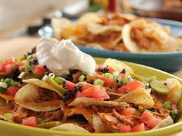

Chicken Nachos

Description
Chicken nachos are an appetizer or meal made by topping crunchy tortilla chips with tender, often shredded chicken, melted cheese, and various toppings such as salsa, beans, avocado, and sour cream.
While they are a versatile dish with a base of crispy chips and savory chicken, the specific flavor profile can vary widely depending on the seasonings for the chicken and the choice of toppings, ranging from classic Mexican-inspired versions to Mediterranean or BBQ styles.
Ingredients
- 2 skinless, boneless chicken breasts, chopped
- 2 tablespoons vegetable oil
- 1 teaspoon cayenne pepper, or to taste
- 1 (12 ounce) package corn tortilla chips, or as needed
- 1 (7 ounce) can diced green chiles, drained
- 1 (8 ounce) package shredded Mexican-style cheese blend
Steps
- Combine chicken, vegetable oil, and cayenne pepper in a bowl; let stand at least 15 minutes, or longer if desired.
- Preheat the oven to 325 degrees F (165 degrees C).
- Heat a skillet over medium-high heat. Add chicken mixture; cook until no longer pink. Remove from heat; set aside.
- Meanwhile, spread a thin layer of tortilla chips in a 9x13-inch baking dish; top with 1/4 chicken, 1/4 chiles, and 1/4 cheese. Repeat layers three more times ending with cheese.
- Bake in the preheated oven until cheese melts and nachos heated through, 15 to 20 minutes. Serve with your favorite nacho toppings.
Home